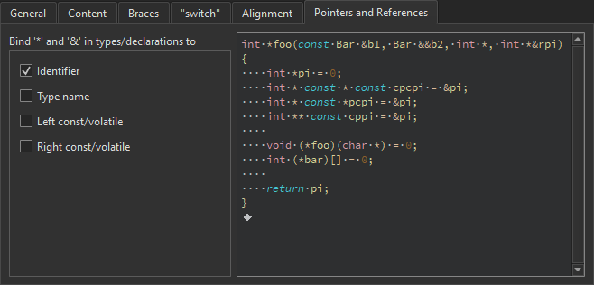

C++ Code Style
Qt Creator uses the Clang LibFormat library to automatically format and indent C++ code. It enforces a coding style for a project or the whole organization.
To specify global indentation settings for the C++ editor:
- Go to Preferences > C++.

- In Formatting mode, select:
- Indenting Only to only indent code.
- Full Formatting to use the Ctrl+I keyboard shortcut to format code instead of indenting.
- Use Built-In Indenter to turn off ClangFormat.
- Select Ignore files greater than to make parsing faster by ignoring big files. Specify the maximum size of files to parse.
- To apply the formatting while you type, select Format while typing.
- To apply the formatting to the edited code when you save the file, select Format edited code on file save.
- To change the ClangFormat style globally for all projects, select Use custom settings.
- In Custom settings, select the settings to change, and then select Copy.
- Give a name to the settings, and select OK.
- In ClangFormat, edit the ClangFormat Style Options. The live preview shows how the preferences change the indentation. If you enter invalid values, you see warning messages.
Using Built-In Indenter
If you select Use Built-In Indenter in Formatting mode, you can specify how to:
- Interpret the Tab and Backspace key presses.
- Indent the contents of classes, functions, blocks, and namespaces.
- Indent braces in classes, namespaces, enums, functions, and blocks.
- Control switch statements and their contents.
- Align continuation lines.
- Bind pointers (*) and references (&) in types and declarations to identifiers, type names, or left or right
constorvolatilekeywords.
Specifying Settings for Content
You can indent public, protected, and private statements and declarations related to them within classes.
You can also indent statements within functions and blocks and declarations within namespaces.
Specifying Settings for Braces
You can indent class, namespace, enum and function declarations and code blocks.

Specifying Settings for Switch Statements
You can indent case or default statements, or statements or blocks related to them within switch statements.

Specifying Alignment
To align continuation lines to tokens after assignments, such as = or +=, select Align after assignments. You can specify additional settings for aligning continuation lines in the General tab.
You can also add spaces to conditional statements, so that they are not aligned with the following line. Usually, this only affects if statements.

Binding Pointers and References
To bind pointers (*) and references (&) in types and declarations to identifiers, type names, or left or right const or volatile keywords, select the check boxes in the Pointers and References tab.
The * and & characters are automatically bound to identifiers of pointers to functions and pointers to arrays.

Creating ClangFormat Files from Command Line
You can create .clang-format files that have the configuration options of a certain predefined style from the command line. For example, to create a format file for the LLVM style, enter the following command:
clang-format -style=llvm -dump-config > .clang-format
See also Indent text or code, Specify code style, Behavior, Qt Quick Code Style, and Nim.